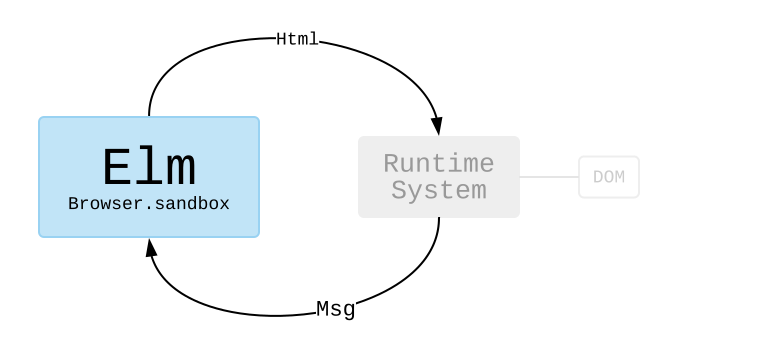

Commandes et Souscriptions
Plus tôt dans ce livre nous avons vu comment l'Architecture Elm gérait les interactions avec le clavier et la souris, mais qu'en est-il de la communication avec des serveurs ou de la génération de nombres aléatoires ?
Pour répondre à ces questions, il va nous être utile d'en apprendre un peu plus sur comment fonctionne l'Architecture Elm en coulisses. Cela va permettre de comprendre pourquoi les choses fonctionnent un peu différemment en Elm par rapport aux autres langages comme Javascript, Python, etc.
sandbox
Je n'ai pas trop insisté dessus, mais jusqu'ici nos programmes ont été créés avec Browser.sandbox. Nous lui avons passé un Model initial et décrit comment le mettre à jour avec update et l'afficher avec view.
Vous pouvez considérer Browser.sandbox comme un système de ce type :

Nous pouvons rester dans le monde de Elm, c'est à dire écrire des fonctions et transformer de la donnée. Ceci est lié au runtime system de Elm. Le runtime system se charge de trouver comment afficher l'Html de manière efficace. Est-ce que quelque chose a changé ? Quelle est la modification minimale du DOM requise ? Il se charge aussi de gérer lorsque quelqu'un clique sur un bouton ou saisit quelque chose dans un champ texte. Il transforme cela en un Msg et le transmet à notre code Elm.
En séparant proprement toutes les manipulations du DOM, il devient possible d'utiliser des optimisations extrêmement agressives. Le runtime system d'Elm est en grande partie responsable du fait qu'Elm soit une des options disponibles les plus rapides.
element
Dans les exemples suivants, nous allons utiliser Browser.element pour créer des programmes. Ceci va nous amener aux concepts de commandes et de souscriptions qui vont nous permettre d'interagir avec le monde extérieur.
Vous pouvez considérer Browser.element comme un système de ce type :

En plus de produire des valeurs Html, nos programmes vont aussi envoyer des valeurs Cmd et Sub au runtime system. Dans ce monde, nos programmes peuvent commander le runtime system pour qu'il effectue une requête HTTP ou qu'il génère un nombre aléatoire. Ils peuvent aussi souscrire pour connaître l'heure actuelle.
Je pense que les commandes et les souscriptions prennent tout leur sens lorsque l'on commence à les voir en exemple. Allons-y donc !
Note 1: Certains lecteurs pourraient être inquiets au sujet de la taille des fichiers. « Un runtime system ? Ça a l'air énorme ! » Mais en fait, ça ne l'est pas. Les fichiers Elm sont exceptionnellement petits par rapport aux autres alternatives populaires.
Note 2: Nous allons utiliser des packages provenant de
package.elm-lang.orgdans les exemples qui arrivent. Nous en avons déjà utilisé quelques-uns :Mais à partir de maintenant, nous allons nous intéresser à d'autres un peu plus sophistiqués :
Il y a cependant des tonnes d'autres paquets sur
package.elm-lang.org! Ainsi, lorsque vous créerez vos propres programmes Elm en local, vous devrez probablement exécuter des commandes comme celles-ci dans le terminal :elm init elm install elm/http elm install elm/randomCela créera un fichier
elm.jsonavecelm/httpetelm/randomcomme dépendances.Je mentionnerai les paquets que nous utiliserons dans les exemples suivants, donc j'espère que cela vous donnera un aperçu de ce dont il s'agit !